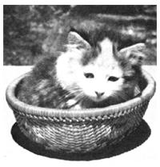

CANCER. AMONG CATS, IT IS THE evilest of diseases. Of all our four-footed brethren, felines are the most susceptible to a large host of viruses. And one contagious, cancer-causing virus, the feline leukemia virus (FeLV), has gained an insidious foothold within pet cat populations.
Since it was first recognized as a disease in 1964, feline leukemia has replaced panleukopenia-better known as feline distemper-as the principal scourge of cats. FeLV attacks a cat's white blood cells and renders those cells ineffective. Because white blood cells foster the healthy body's immune response to disease, their demise renders the body defenseless against even the most benign illness.
In other words, as FeLV attacks the white blood cells, the cat's ability to resist other infections diminishes. Eventually Kitty gets a serious secondary disease that it cannot fight off: Most cats actively infected with FeLV ultimately die. In fact, statistics show that 83% of infected healthy cats die within three and a half years of the time the virus is detected in their body.
Does all this sound to you much like the human disease AIDS? Well, the two are similar, but they are not the same (although some folks have taken to calling the feline syndrome FAIDS feline autoimmune disease syndrome, because its components are so similar to AIDS). The similarity between the two involves the way each virus attacks the immune systems of the body, making those systems unable to respond to other diseases. The difference is that the virus that attacks cats is quite distinct from the one that is seen in human AIDS. To date there is no scientific proof that FeLV is capable of causing any disease in humans.
As FeLV is working its wrath on a cat's immune system, the animal becomes more and more susceptible to a host of diseases. Pussy may have severe intestinal trouble-diarrhea, vomiting and stomach cramps. You may notice some lymph node swelling, especially around the neck and lower jaw.
Any number of other symptoms may appear, too-infertility or spontaneous abortion, skin problems, poorly healing wounds, mouth ulcers, coughing or a persistent runny nose, for example. Or, the cat may not seem to be itself; it may lie around and act as though there isn't an ounce of energy in its body. Some cats simply up and die without much warning.
Fortunately, not all cats are susceptible to the scourge of FeLV. Some cats-perhaps half of all pet cats-develop a resistance to the virus.
However, the virus has yet another little quirk that doesn't exactly make it an endearing little pathogen. In about 30% of the cats exposed to F FeLV , the virus becomes latent. That is, it doesn't cause any disease in the host cat, but it does remain alive and well in the animal-ready to pass its leukemic syndrome on to other felines.
It would surely be nice if I could tell you that we have a "magic bullet" cure for FeLV, the cat owner's number one menace. But there's no such thing. In most cases the best I can do for clients with a leukemic cat is to offer solace. In fact, if you were to come to me with an FeLV-infected kitty, I'd be obligated to inform you of the possible dire consequences of keeping the infected pet around the house. Remember that it's nigh on impossible to prevent a sick cat from passing on FeLV to another cat, no matter how healthy. All it takes for one cat to infect another is moist contact-the saliva from one cat licking another is enough.
In fact, one of the best ways to avoid the potential destructiveness of FeLV is to minimize contact between cats. You'd do well to consider having only one cat in the house, and to keep that cat indoors away from other cats as much as possible.
There are several tests available for FeLV. All require a visit to your vet-who will take a blood sample, or possibly a sample of saliva or tears-and all are fairly reliable. But they're not perfect. For example, a positive test result may not be cause for immediate panic. One common quick-screening test, for example, the enzyme-linked immunosorbent assay (ELISA), has a rather high rate of false positive test results.
So if you have a cat that tests positive on the ELISA, you should have your vet run another test utilizing the immunofluorescence assay (IFA) or the virus isolation method; either method is a more reliable test than the ELISA. (Also, keep in mind that an animal that tests positive could be one of those that will eventually rid itself of the infection.) To verify the result, I recommend a retest whenever Kitty has had one positive test-making sure, of course, to keep the cat isolated during the "wait and see" period.
If, however, the IFA or the virus isolation test remains positive after repeated testing (say, after two or three tests over no more than six months), your options aren't appealing. Most veterinarians recommend that cats testing positive be put to sleep. Since the cancer of FeLV is almost always fatal, euthanasia is often the best choice to make. Remember, too, that a cat testing positive can pass the disease on to other cats in the neighborhood.
Also, although there is no real scientific evidence to support them, some vets (myself included) fear that exposure to cats with FeLV may increase your (or your kids') risk of getting cancer. I want to stress that there's nothing definite to support this suspicion yet, and, in fact, many vets and medical researchers say there is positively no connection. But species-specific viruses do some times take evolutionary leaps and infect other species (FeLV, for example, is thought to have developed originally in European rats). And some surveys do point a somewhat incriminating finger-in fact, enough surveys to make more than a few vets pretty antsy about trying to treat FeLV-infected cats in households where there are children.
I recommend annual testing of all cats that are in multiple-cat households, or that run outdoors and are therefore exposed to the cat population at large.
There are ways to treat FeLV, but unfortunately the treatments are often expensive, lengthy and painful to both owner and pet-and the results are seldom rewarding. If you've thought over the options and still want to try treatment, discuss this with your veterinarian.
The best-and some would say, the only-way to prevent the spread of FeLV within a household of cats is to put to sleep all cats that test positive, to clean the premises with ordinary disinfectants or household bleach, and to not bring in any new cats until all the household cats have had two negative FeLV tests over a span of six months' time.
There is better news on the prevention front. An FeLV vaccine has been developed in recent years, and initial results seem encouraging indeed. Plan on a vaccine program that includes two or three kitty injections to begin the immunity and then an annual booster shot. As I write this, there's some question, particularly among vets on the West Coast, about the vaccine's ability to adequately produce a true immunity. But for now, anyway, it is the best weapon we have to fight FeLV.
The other element in prevention, of course, is the cat's own active immune system. Since some cats are known to be immune to the virus, it only makes sense for cat owners to do everything possible to enhance their pets' natural immunity. Here's where an active holistic health program-one that includes proper nutrition, adequate exercise and a loving, caring living environment-is critical.
|
 DON WRIGHT Art Director Don Wright's cat resting after testing positive. One year and much love later, a retest came back negative. |
|
|